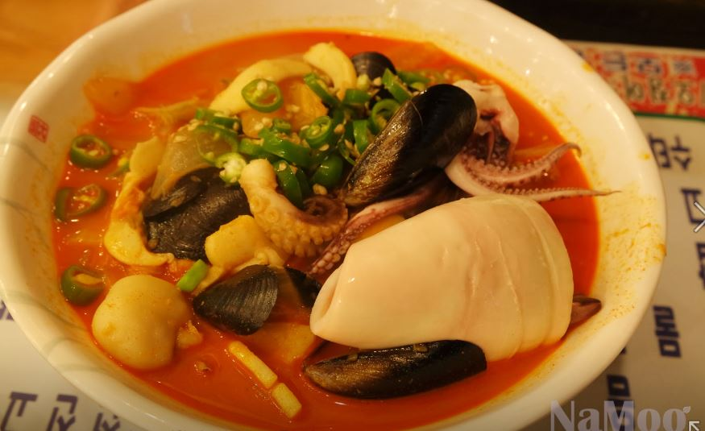
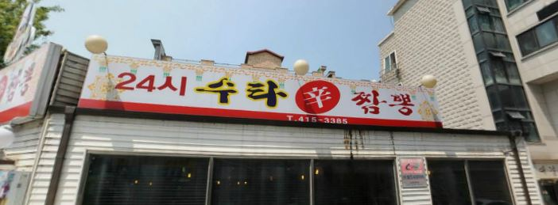
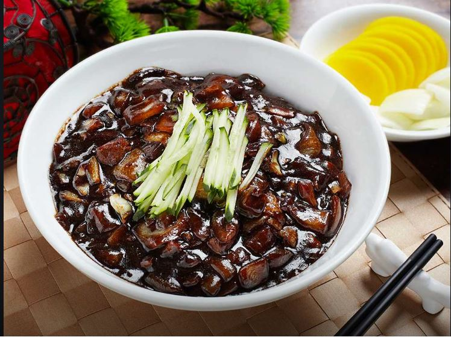
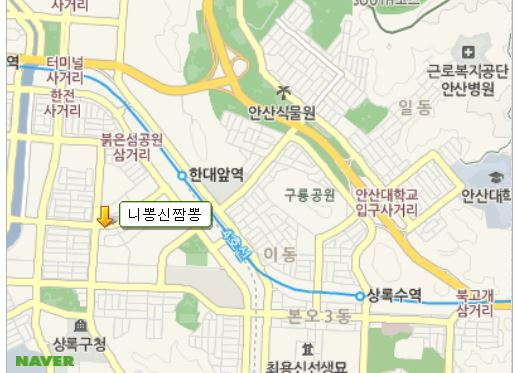
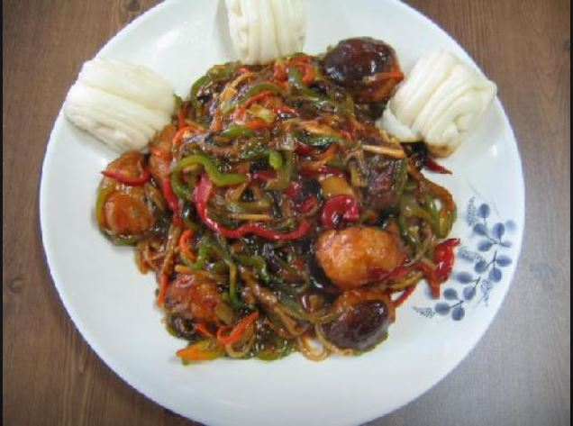

|  | |
|---|---|
| 주 소 | 주소경기도 안산시 상록구 삼태기1길 41 |
| 업체소개 | ● 사골육수로 맛을 낸 짬뽕이 대표메뉴인 중식당입니다.직접 만든 수타면과 12시간 이상 사골을 끓인 국물을 사용하는데요.꽃게, 새우, 오징어 등 푸짐한 해물이 들어가는 수타해물짬뽕이 인기이지요. 원하는 매운 맛을 선택할 수 있습니다. |
| 전화번호 | 031-415-3385 | 평점 | ★★★★☆ |
|  | |
|---|---|
| 주 소 | 경기 안산시 상록구 삼태기1길 41 |
| 업체소개 | ● 사골육수로 맛을 낸 짬뽕이 대표메뉴인 중식당입니다. 면을 수타로 직접 만드십니다. 12시간 이상 사골을 끓인 국물이 특징입니다. 푸짐한 해산물과 구수한 국물덕에 짬뽕이 인기입니다. 매운맛은 직접 선택하셔서 드실 수 있습니다. |
| 전화번호 | 031-415-3385 | 평점 | ★★★★☆ |
|  | |
|---|---|
| 주 소 | 경기도 안산시 상록구 서암로2길 11 태평양관광호텔 |
| 업체소개 | ● 매일 11:00~21:00 연중무휴 / 자장면 4,000원 매운짬뽕 6,000원 탕수육(1인분) 4,000원 간풍기(1인분) 4,000원 꿔바로우 5,000원 / 이용정보예약ㅇ단체석ㅇ주차ㅇ포장ㅇ배달ㅇ무선 인터넷ㅇ남/녀 화장실 구분ㄴ |
| 전화번호 | 031-417-4325 | 평점 | ★★★☆☆ |
|  | |
|---|---|
| 주 소 | 경기도 안산시 상록구 광덕1로 346 동영센트럴타워 |
| 업체소개 | ● 매일 00:00~24:00 유니콩짜장 2,500원 옛날짬뽕 6,000원 야채볶음밥 6,000원 / 이용정보예약ㅇ단체석ㅇ주차ㅇ포장ㅇ배달ㅇ무선 인터넷ㅇ남/녀 화장실 구분 |
| 전화번호 | 031-502-8598 | 평점 | ★★★★★ |
|  | |
|---|---|
| 주 소 | 경기도 안산시 상록구 사1동 1172-12 |
| 업체소개 | ● 매일 09:00~21:00 연중무휴 /탕수육 소 14,000원 자장면 4,500원 짬뽕 4,500원 ● 강남에서 조리장을 하셨던 분이 주인이랍니다. 맛대맛에도 벌꿀 탕수육으로 출연한 적이 있고, 다른 요리로도 타 프로그램에도 출연했답니다. 맛에는 자신이 있으니 한번 오셔서 맛을 보세요. 특히 여기 오신 손님들은 짬뽕을 좋아 하시더라고요. |
| 전화번호 | 031-502-8598 | 평점 | ★★★★★ |